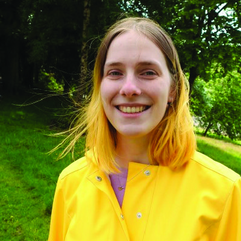
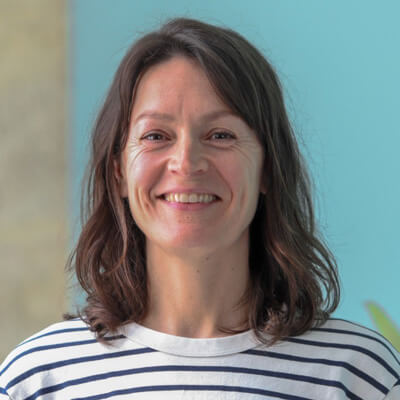
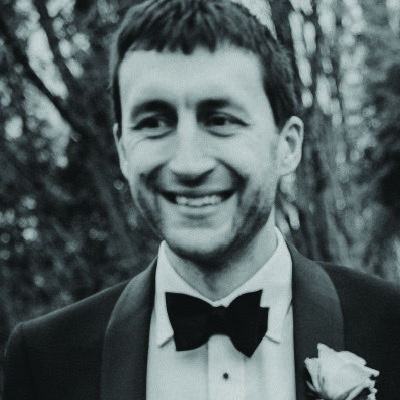
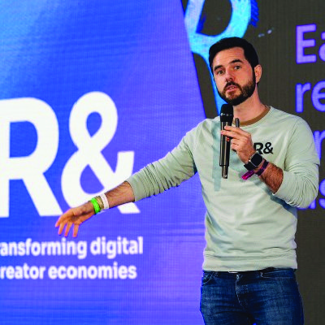

Jonathan is an outstanding fractional AI specialist. Paired with mid level devs who have the right attitude, but are not necessarily adept in their approach and tooling practice, Jonathan can drive a team to achieve great results with a very small and carefully managed amount of time his side.
After seeing the output from the junior dev under his tutelage, and dipping in and out of their slack comms, I braced myself for a massive invoice, expecting we had racked up a huge amount of hours - however in just two hours a week, Jonathan had steered us to ship products fast, and iterate and improve really quickly. A great asset in any team looking to try and move fast in the AI space.
Jonathan has been working with Freetobook to develop an application that helps our support team respond to day-to-day user queries. The results were quickly impressive, and the tool was positively received and put to good use by our staff.
He has helped us build, compare, and iterate on different variants of our LLM-based system. For example, we've explored router-based workflows, and trialled several approaches to incorporating retrieval-augmented context into our prompts. He has guided the continued development of the system by helping us build a user feedback system and identify key metrics that inform new variants. This data-driven approach has given us real confidence in what we can achieve with AI, with benefits extending beyond this project.
Jonathan’s collaborative approach has made him a pleasure to work with, and we would highly recommend his services.
We worked with Jonathan and Daniel from an early stage of our journey for two main purposes. Firstly, to help decide on areas of chemistry to focus on and, secondly, to help structure our AI-driven laboratory around varying levels of automation from first principles.
The engagement began with two in-depth reports to detail a global view of a complete chemistry lab set-up. They delivered beyond our expectations, including everything from the most minute details of purchasing and safe storage to an exhaustive view of the stages and equipment required to achieve closed-loop chemistry workflows. We especially appreciated receiving workflow options for manual, semi-automated, and fully automated versions of what we could achieve, including capital and operating expense estimations.
Jonathan and Daniel then worked closely with our Director of Lab & Material Innovation to support the design of a new laboratory in a new building, contributing to decisions around layout, equipment selection, and workflow constraints suitable for an AI-first approach to experimentation. We truly valued their hands-on approach and ability to identify potential pitfalls in advance, including safety perspectives. They would always try to help us understand how to balance our level of automation/complexity vs. the costs and real benefits, and helped us recognise the importance of rate-limiting steps in high-throughput design.
We are now handing over to an engineering and design firm, who will translate this foundation into a detailed technical plan ahead of construction in the coming months. Throughout the engagement, Jonathan and Daniel acted as thoughtful and reliable partners, effectively bridging AI strategy, automation, and practical laboratory operations from the outset. We look forward to continuing our work with them as we move further into the laboratory automation strategy.
I had the pleasure of working with Jonathan at Synapto, where we collaborated on building AI-driven solutions for a fast-paced fintech project. As an AI consultant, he brought a strong mix of strategic thinking and practical problem-solving that had a real impact on the direction and quality of our work.
One thing that stood out immediately was his ability to quickly identify where things weren’t working as expected and turn that into a structured approach for improvement. A great example of this was within our company enrichment pipeline, specifically the domain search step. While initial results seemed acceptable on the surface, Jonathan proposed creating a proper benchmark to measure the actual accuracy. This gave us a much clearer (and more honest) picture of the system’s performance and helped us focus our efforts where it mattered most.
From there, he played a key role in shaping the solution space. Through collaborative iteration, we moved toward a more robust multi-step approach involving domain search, evidence gathering, and candidate verification. This significantly improved the overall accuracy of the pipeline and made the system far more reliable in practice.
Beyond that, Jonathan was always thoughtful in discussions, clear in his communication, and brought a calm, structured approach to problem-solving. He has a strong ability to bridge the gap between high-level AI concepts and practical implementation, which made collaboration very effective.
I really enjoyed working with him and would gladly collaborate again. I’d highly recommend Jonathan to any team looking for someone who can bring clarity, direction, and meaningful improvements to AI-driven projects.
Jonathan joined my lab immediately following his PhD as one of our pioneering AI and Robotics specialists. Within three months, he was entrusted with the leadership of our Chemorobotics team. His first action was to establish a robust software and hardware architecture that empowered our team to develop ChemAI platforms with speed by leveraging modular, reusable building blocks. This accelerated our iteration cycles and, a decade later, several of his original libraries remain in use in daily lab operations.
Under my direct supervision, Jonathan managed a multidisciplinary team of ten engineers, PhDs, and postdocs at the then uncharted intersection of AI, Robotics, and Chemistry. His expertise in machine learning challenged the team to rethink data acquisition and successfully integrate novel concepts like active learning into our workflow.
This resulted in high-impact publications in PNAS, Angewandte Chemie, and Nature Communications, which have since gathered hundreds of citations.
What stood out most was Jonathan’s ability to understand the complexities of a chemistry environment despite his non-chemistry background. He quickly internalised the mental models and instrumentation logic required to operate at the cutting edge of the field. His ability to bridge the gap between complex robotics and chemical discovery provided a pivotal technical proof-of-concept during the formative stages of what would eventually become Chemify.
Jonathan possesses the technical depth to build the tools and the strategic vision to lead the people using them. Any organisation looking to transform their technical capabilities and accelerate innovation would be fortunate to partner with him.

I really like Jonathan’s ‘thinking out of the box’ approach which led to a much better result than tackling the problem the standard way. Overall, he is a great advisor and very knowledgeable about ML and AI. He really cares about the projects he’s supervising, goes beyond focusing on just one specific problem and considers the whole picture which makes him so great to work with.
Jonathan originally supervised my university project which is why I reached out to him when I was looking for advice on my current work project at Freetobook. Machine learning is a new area for the company, therefore I sought to get some academic consultations when solving a very complex problem. We agreed on weekly consultations which were essential in getting the project to its current stage where it is ready for user testing. I have learned a lot about all the things to consider when working on an ML based product.
I met Jonathan during a ML masterclass where he was coaching industry leaders on the recent advances in AI. The course was well-structured with a clear focus on business applicability. I joined the course during my work as Director of Data in a successful startup in the academic publishing industry. Through Jonathan’s input we were able to ship intelligent product functionality as part of a SaaS platform that is used by tens of thousands of researchers around the world. Jonathan is a great teacher, his ability to adapt to my pre-existing knowledge and needs was instrumental in giving me a much deeper insight into ML than I had before. I was able to leverage this new found knowledge and apply it to real-world business problems.
I’ve had the pleasure of working with Jonathan for over a year on a reinforcement learning project at my workplace. When the project began, I was new to machine learning and AI, and I also had limited knowledge of many data analysis and statistical concepts. From the outset of the project, his innate curiosity enabled him to quickly familiarise himself with our use case and iterate on solutions immediately. His practical approach to learning and his perseverant attitude towards problem-solving kept us engaged and eager to learn whilst also producing measurable results we can be proud of. Through his mentorship, I've not only gained a deeper appreciation for how we can leverage data, but have also developed several skills in data exploration and analysis that feel instinctual to me now.
Our company have been working with Jonathan for nearly a year. Our dev team had very little machine learning experience. He coached a team of 3 developers on machine learning with a focus on reinforcement learning, while concurrently helping us find areas in our business where machine learning could be applied. Our first solution has recently gone into production and we are very happy with the results so far. He has proved invaluable as I suspect we would have ended up spending lots of time trying to tackle problems that were not suitable, too complex for our level of experience or approaching them in the wrong way.
We have recently expanded and Jonathan is now coaching a different dev team with a focus on using llms. He has proved integral for us as a company adopting machine leaning and artificial intelligence. As a mentor he has a incredible depth of knowledge, is a clear and effective communicator, and is excellent at keeping projects focused and on track.
I first met Jonathan when he was running a machine learning masterclass, aimed at industry leaders incorporating mainstream AI into their daily business activities. At the time, I was the CTO of a very successful post Series B startup, in the Silicon Valley, that I’d founded from my academic work. He ran his course so well that it not only accelerated the adoption of AI into the product, but also helped us co-author a research manuscript that made its way into the nature portfolio of journals! Jonathan and I have since stayed in touch and meet regularly to discuss everything from life, to academia, to current industry trends, to the future of AI. His breadth of knowledge and uncanny ability to apply and implement the latest technologies to solving business problems is unparalleled. Cheers to a great mentor, advisor, and friend!

I had the pleasure of working with Jonathan as a freelance Business Development Consultant from June 2024 until our acquisition by HuggingFace in April 2025. Hired to position our open-source humanoid robot Reachy 2 as a credible platform for Embodied AI research, Jonathan exceeded expectations with his strategic mindset, technical expertise, and ability to engage top-tier academic labs.
During his mission, Jonathan helped us transition from cold prospecting to initiating high-impact collaborations, laying the groundwork for partnerships and potential research publications, significantly enhancing Reachy 2’s visibility in the AI and robotics community. What set Jonathan apart was his ability to bridge academia and industry. His insights into the competitive landscape and proactive suggestions - such as accelerating AI demos to showcase Reachy 2’s capabilities - were invaluable. While working only 4 to 6 hours per week for us, Jonathan delivered consistent results, maintained clear communication, and provided actionable recommendations that shaped our strategy.
Jonathan's entrepreneurial spirit and passion for innovation were evident in his approach. He challenged us to refine our processes and position Reachy 2 as a benchmarking platform for Embodied AI. His ability to navigate complex challenges and build meaningful relationships made him an exceptional collaborator.
I highly recommend Jonathan to any organization seeking a forward-thinking professional with expertise in AI, robotics, and business development. His unique blend of technical knowledge, strategic vision, and execution skills makes him a standout consultant.

I had the privilege of working closely with Jonathan throughout my 4-year chemistry PhD, during which he served as the senior postdoc and team leader for our automated chemistry team. Jonathan’s technical expertise, evident from his impressive track record, was matched by his ability to work across (and in new) disciplines and quickly acquire new areas of expertise. Beyond his intellectual acumen, it was Jonathan’s soft skills that set him apart as a manager and scientific leader. His passion for the work was palpable, and he invested deeply in the growth and well-being of his team members. As a communicator, whether in interpersonal interactions, writing, or presentations, Jonathan is engaging and clear with both experts and those less experienced. Jonathan played a pivotal role in my scientific and personal development, consistently challenging me to expand my horizons.
His contributions were instrumental in my enjoyment and successful completion of my PhD. Notably, even in a field outside his primary expertise, Jonathan actively participated in numerous projects, resulting in publications in high-impact journals. Additionally, he provided informal support on an ad-hoc basis to various endeavors across the wider team. I wholeheartedly recommend working with Jonathan to any student or postdoc. His blend of intellect, technical expertise, soft skills, and leadership qualities, make him an invaluable mentor. Having maintained contact with Jonathan since my PhD, I continue to be impressed by his diverse successes spanning academia, start-ups, and education. Jonathan’s influence extends beyond the completion of my PhD, shaping my professional approach in industry today. His guidance and mentorship have not only contributed to my academic achievements but have also left an enduring impact on my modus operandi in the industrial landscape.

An hour was all Jonathan needed to transform my understanding of modern NLP. He distilled his insights clearly through live demos and business use-cases.
I had the pleasure of working with Jonathan on the AI team at FreeToBook, where we explored different AI and machine learning solutions to enhance the company's booking software. Our main project focused on developing a reinforcement learning agent to optimise the allocations to Google Ad campaigns after the sunsetting of CPA models, with the goal of maximising clients occupancy while maintaining similar profit margins. Jonathan's knowledge about reinforcement learning was invaluable to the team. He combined technical expertise with the remarkable ability to simplify complex concepts by giving realistic examples, making them easily understandable for everyone.
His insights guided our approach, ensuring that we applied RL effectively to the business problem at hand. Beyond his technical skills, Jonathan is also a great collaborator - always open to discussing new ideas, challenging assumptions, and pushing the project forward. His ability to bridge the gap between state-of-the-art AI research ideas and practical business applications made a significant impact on our project’s success.
Jonathan’s eagerness to further to continue expanding his expertise in the field is inspiring, making working with him rewarding and truly enjoyable!
Jonathan was our team leader in the Cronin group where I was working on my PhD. The first thing I noticed was his curiosity about chemistry to which he applied his computing and robotics knowledge, which led to a beautiful and functional chemical robot that gathered great data at speed. The rest of the memories were about how his experience helped us solve problems, keep the project on track, and keep good communication in the team. Being a team leader in my current role I can reflect back on Jonathan as an influential and engaged leader, and this helped develop me into where I am now.
I was preparing an important talk for a large audience of 600 people from the tech industry, and Jonathan stepped up to help me organize and articulate my ideas clearly and logically. We were both working at the Learning Planet Institute (formerly CRI) in Paris at the time, and Jonathan extended his invaluable assistance towards structuring the impactful talk. Through active listening, and by leveraging his expertise, Jonathan asked thoughtful questions that helped me identify and structure my main points and supporting arguments. For instance, his guidance in crafting compelling narratives and identifying key supporting points significantly enhanced the impact of my presentation.
Jonathan is skilled at bringing out the best in people. His encouragement and constructive feedback bolstered my confidence while also pushing me to bring the best of my speaking abilities. As a result of his dedicated mentorship, I delivered a clear and impactful talk that resonated deeply with the audience at Web2day, garnering praise and opening doors to subsequent speaking engagements. I wholeheartedly recommend Jonathan for any endeavor where his exceptional coaching abilities, knack for fostering clarity, and talent for nurturing others’ potential are invaluable assets.
I met with Jonathan way back in 2015 while I was doing my PhD in the Cronin Group in Glasgow, trying to use machine learning methods in chemistry. Jonathan was my supervising postdoc in the team and he was immensely helpful and supporting throughout the duration of our common projects, allowing me to learn a lot about an area of expertise that I knew nothing about till that point as well as indulging me with my continuous questions. After my graduation we have stayed in touch and meet occasionally in order to discuss subjects broader than academia, such as current political trends, the use of AI in industry, and use of social media in science. In a nutshell, Jonathan is an engaging person, curious and open to new ideas/concepts, enjoying thought-provoking conversations and projects.
I first met Jonathan in Glasgow when I was doing my PhD in the Cronin Group in the University of Glasgow. I studied chemistry and during my doctorate implemented machine learning methods to automatize chemical procedures. This required a deep knowledge in programming which I did not have at that moment and I was in need of someone to provide me with guidance. Here Jonathan was someone that stepped up and always with a very positive and supportive attitude. He always had an encouraging word for me as well as ideas and suggestions to keep on going with my project. Jonathan was a very important part of my PhD.
If you have a project you would like consultancy for, please contact me to discuss further.
get in touch